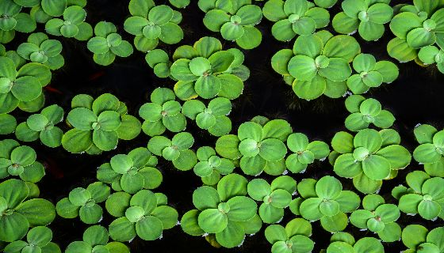
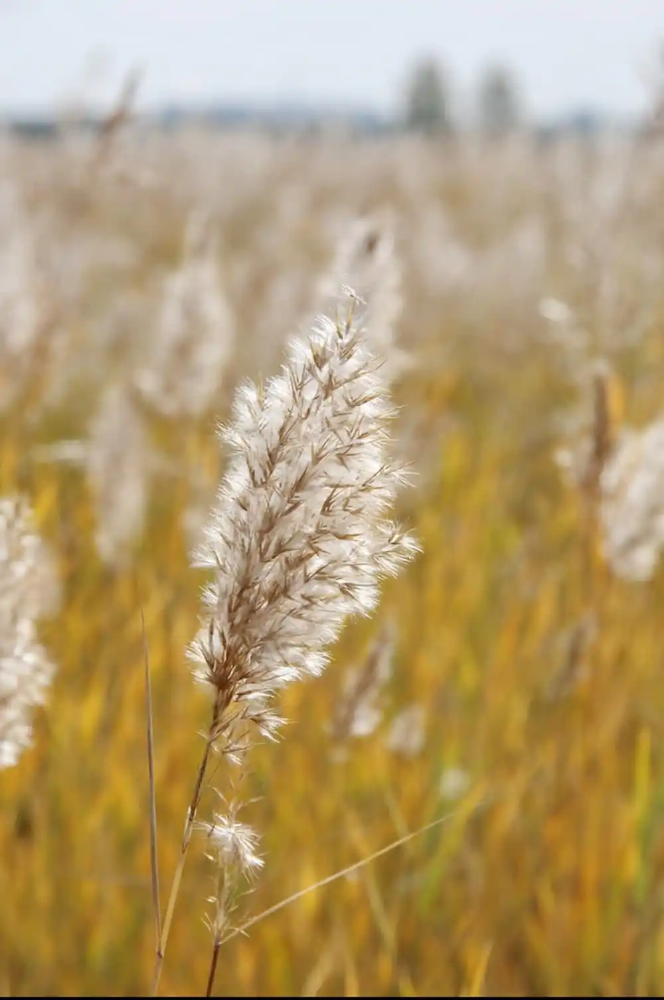
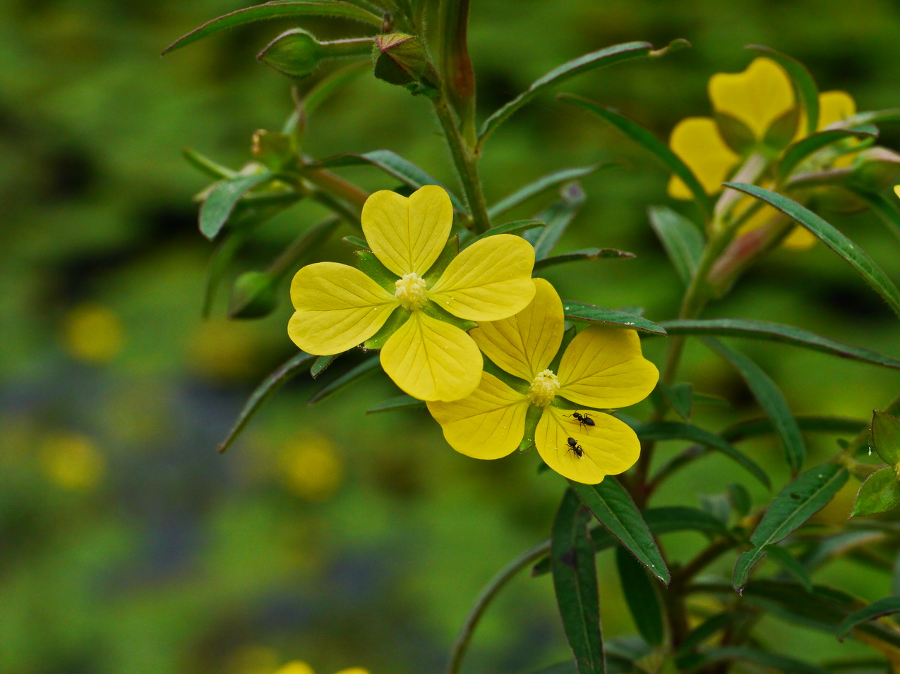

🌸 睡蓮
睡蓮是典型的浮葉型水生植物，葉片漂浮於水面， 具有遮光與降溫效果，可有效減少藻類過度生長。
同時，睡蓮的花朵具有高度觀賞性，但在生態功能上更重要的是提供遮蔽， 讓小型魚類與昆蟲能躲避掠食者，增加生存機率。
睡蓮通常出現在水質較穩定的環境，因此也常被視為水域健康的重要指標。
下厝埤屬於埤塘型濕地生態系，長期維持穩定水域環境， 因此能孕育多樣化的水生與濕生植物。 這些植物並非單純的景觀元素，而是在整個生態系中扮演基礎角色， 負責進行光合作用、提供氧氣來源，並維持水域能量循環。
此外，植物的存在也直接影響水質變化。 透過吸收水中養分、減少藻類過度繁殖，以及穩定水溫， 使整體環境更加適合魚類、昆蟲與兩棲類生存。
因此，下厝埤的植物不只是自然景觀的一部分， 更是維持整體生態平衡不可或缺的核心基礎。
睡蓮是典型的浮葉型水生植物，葉片漂浮於水面， 具有遮光與降溫效果，可有效減少藻類過度生長。
同時，睡蓮的花朵具有高度觀賞性，但在生態功能上更重要的是提供遮蔽， 讓小型魚類與昆蟲能躲避掠食者，增加生存機率。
睡蓮通常出現在水質較穩定的環境，因此也常被視為水域健康的重要指標。

浮萍是一種極小型漂浮植物，具有非常快速的繁殖能力， 能在短時間內覆蓋大片水面。
它可以吸收水中的氮與磷，減少水體優養化問題， 在自然淨化系統中扮演重要角色。
同時浮萍也是微生物與小型水生生物的棲息基礎， 在食物鏈中屬於最前端的能量來源。

蘆葦多生長於埤塘邊緣，是典型的濕地挺水植物， 具有發達根系，可以穩定土壤並防止水岸侵蝕。
蘆葦叢形成天然屏障，不僅能減緩水流速度， 還能提供鳥類築巢、昆蟲躲藏與兩棲類活動空間。
此外，蘆葦也能過濾水中懸浮物，對水質改善具有正面影響。

水丁香常見於靜水或緩流水域，具有良好的環境適應能力， 能在水位變動的環境中穩定生長。
它可提供昆蟲停棲與產卵空間，形成重要的生態過渡帶， 連接水域與陸域環境。
在濕地生態中，水丁香有助於提升整體物種多樣性， 維持生態系的穩定結構。